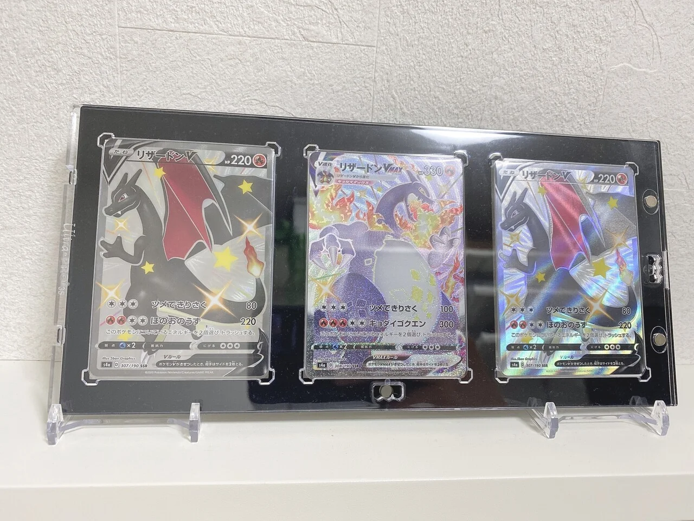

制作テーマ決め①
制作テーマ決め②
大まかな形をスケッチで決める
材料
切断したパーツ
組み立てた物
]
まとめ
私は最近ミニマリスト的生き方に興味を持ち始め、断捨離をしているので新しい物を増やしたくありません。
そこで捨てれないけど使い道がないものに新しい使い道を付与できる物を制作します。
そこで捨てれないけど使い道がないものに新しい使い道を付与できる物を制作します。
今回は家にあるハリーポッターのコースターを使います。これはもったいなくて使えないし貰い物なので捨てられない物なので丁度いいです。

今回はカードを飾るための商品を模倣して制作します。これは片ネジ式ビスを使って四隅を止めている商品です。

①片ネジ式ビス（家にあったもの）②アクリル板（2mm）
自分の中ではなかなか良い作品ができたと思います。
改善点としては一番後ろのアクリル板に模様を彫ればもっと良くなると思いました。
(※設計ファイルは諸事情で張り付けれられませんでした)
改善点としては一番後ろのアクリル板に模様を彫ればもっと良くなると思いました。
(※設計ファイルは諸事情で張り付けれられませんでした)